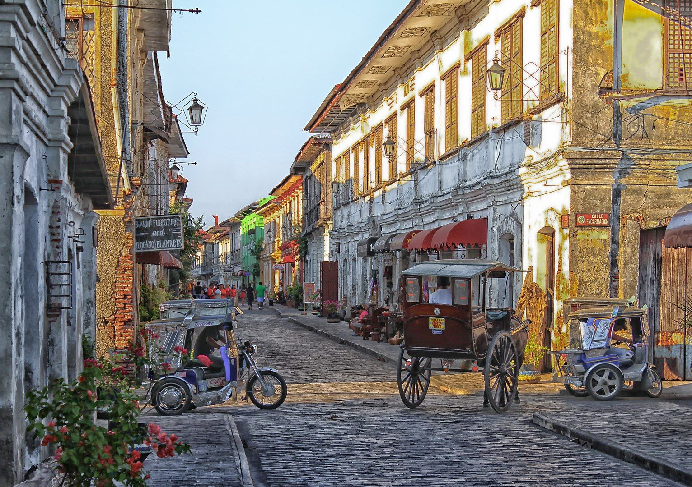

My Favourite City
I'm from the Philippines and my favourite city is Vigan.
Vigan is famous for Calle Crisologo, a cobblestone street lined with beautifully preserved Spanish colonial houses, traditional kalesas, and rich heritage shops that capture the timeless charm of historic Ilocos.
